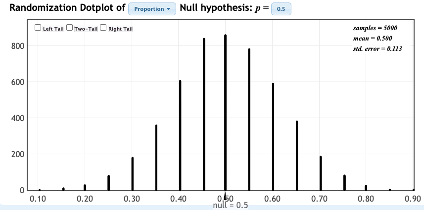
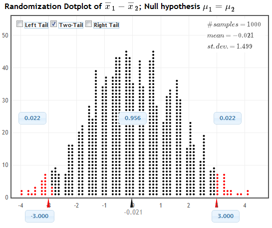

Predict the probability of heads when spinning a penny.
Spin your penny 20 times (do it well!).
Record the number of heads.
Put a tick mark on the board under your value.
My prediction of P(heads)
My number of heads (out of 20)
My proportion of heads
Our Class Data
The tick marks on the board show the number of heads in 20 spins for each student.
Sketch the distribution of the class results. Label the axis.
Describe the center and spread. Is 10 heads typical for our class?
If Spinning Were Fair
Turn and talk (60 sec): If spinning a penny were just like flipping a fair coin, how many heads out of 20 would be typical? How many heads would surprise you?
Key Questions
❓ How unusual is it to see a sample statistic as extreme as that observed, if \(H_0\) were true?
If it is very unusual, we have statistically significant evidence against the null hypothesis
But how do we measure how unusual a sample statistic is, if \(H_0\) were true?
Quantifying Evidence Against the Null Hypothesis
To see if a statistic provides evidence against \(H_0\), we need to explore…
what kind of sample statistics we would observe
just by random chance
if\(H_0\) were true.
Randomization Distribution
A randomization distribution is a collection of statistics from samples simulated assuming the null hypothesis is true
The randomization distribution shows what values of statistics would be observed, just by random chance, if the null hypothesis were true

Simulated proportions of heads in 20 spins of a fair penny (StatKey, 1000 samples)
Turn and talk (30 sec): Where is this distribution centered? Why?
Key Question
❓ How unusual is it to see a sample statistic as extreme as that observed, if \(H_0\) is true?
A randomization distribution tells us what values of statistics we would see just by random chance, if the null hypothesis were true
Use the distribution to assess how extreme the observed statistic is!
p-value
The \(p\)-value is the chance of obtaining a sample statistic as extreme (or more extreme) than the observed sample statistic, if the null hypothesis were true
Calculate the \(p\)-value as the proportion of statistics in a randomization distribution that are as extreme (or more extreme) than the observed sample statistic
Turn and talk (30 sec): In your own words, what does a \(p\)-value of 0.03 tell us?
Calculating a p-value
What kinds of statistics would we get, just by random chance, if the null hypothesis were true?
Answer: the randomization distribution
What proportion of these statistics are as extreme as our original sample statistic?
Answer: the \(p\)-value
Alternative Hypothesis
A one-sided alternative contains either \(>\) or \(<\)
A two-sided alternative contains \(\neq\)
The \(p\)-value is the proportion in the tail in the direction specified by\(H_a\)
For a two-sided alternative, the \(p\)-value is twice the proportion in the smallest tail
Estimating a P-value from a Randomization Distribution
One-tailed alternative: Find the proportion of randomization samples that equal or exceed the original statistic in the direction (tail) indicated by the alternative hypothesis.
Two-tailed alternative: Find the proportion of randomization samples in the smaller tail at or beyond the original statistic and then double the proportion to account for the other tail.
Guidelines for Thinking About P-values
When wording conclusions from a test of significance, you can consider:
\(.05\le p \le .10 \implies\)slight evidence
\(.01\le p \le .05 \implies\)some or moderate evidence
\(p \le .01 \implies\)strong or convincing evidence
Example: Sleep or Caffeine
Students memorized words, then were randomly assigned to take a 90-minute nap or a caffeine pill and were tested on recall. Do the data show a difference in mean words recalled?
\(H_0: \mu_s = \mu_c\) vs \(H_a: \mu_s \neq \mu_c\), with sample statistic \(\bar{x}_s - \bar{x}_c = 3.0\)

Is this a one-tailed or two-tailed test? Where is the randomization distribution centered?
Use the randomization distribution to state the \(p\)-value.
What does the \(p\)-value tell us about the evidence against \(H_0\)? Answer in context.
Activity: Beer and Mosquitoes
43 men were randomly assigned to drink a liter of beer (25 men) or water (18 men). The number of mosquitoes approaching each man was recorded. Is the mean number of mosquitoes approaching a beer drinker larger than for a water drinker?
Is this an experiment or an observational study? What are the cases? What are the variables?
State the null and alternative hypotheses. Define any parameters used.
Beer and Mosquitoes: StatKey
In StatKey (lock5stat.com/statkey), choose Test for Difference in Means, select the Beer and Mosquitoes dataset, and click Generate 1000 Samples. Classify each possible difference in means as (i) very likely, (ii) unlikely but possible, or (iii) very unlikely to ever occur just by chance.
Difference in means
(-7)
(-3)
(-0.5)
(1)
(5)
(i), (ii), or (iii)?
Beer and Mosquitoes: p-value
Recall: \(H_0: \mu_B = \mu_W\) vs \(H_a: \mu_B > \mu_W\)
Find the difference in means observed in the study (shown for the Original Sample in StatKey). Give the notation and the value of the sample statistic.
Where does the sample statistic lie in the randomization distribution? Is it likely or unlikely to occur just by random chance?
In StatKey, check the Right Tail box and use the sample statistic to find the \(p\)-value. Is it large or small?
Quick Self-Quiz
To test \(H_0: \mu = 50\) vs \(H_a: \mu < 50\) using sample data with \(\bar{x} = 43.7\):
Where will the randomization distribution be centered? Why?
Is this a left-tail test, a right-tail test, or a two-tail test?
How can we find the \(p\)-value once we have the randomization distribution?
Summary
The randomization distribution shows what types of statistics would be observed, just by random chance, if the null hypothesis were true.
A \(p\)-value is the chance of getting a statistic as extreme as that observed, if\(H_0\) were true.
A \(p\)-value can be calculated as the proportion of statistics in the randomization distribution as extreme or more extreme than the observed sample statistic.
The smaller the p-value, the greater the evidence against \(H_0.\)